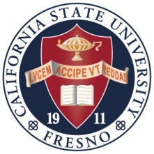

Fresno State University
California State University, Fresno (commonly referred to as Fresno State) is a public research university and one of 23 campuses within the California State University system.[5] It is located at the northeast edge of Fresno, California, approximately 58 miles (93 km) from the entrance to Yosemite National Park, and sits at the foot of the Sierra Nevada mountain range in the San Joaquin Valley. The city of Fresno is the fifth largest city in California. The university is within an hour's drive of many mountain and lake resorts and within a three-hour drive of both Los Angeles and San Francisco. The university has a Fall 2016 enrollment of 24,405 students. It offers bachelor's degrees in 60 areas of study, 45 master's degrees, 3 doctoral degrees, 12 certificates of advanced study, and 2 different teaching credentials.[6][7] The university's unique facilities include an on-campus planetarium, on-campus raisin and wine grape vineyards, and a commercial winery, where student-made wines have won over 300 awards since 1997.[8][9] Members of Fresno State's nationally ranked Top 10 Equestrian Team[10] have the option of housing their horses on campus, next to indoor and outdoor arenas. Fresno State has a 50,000-square-foot (4,600 m2) Student Recreation Center[11] and the third-largest library, in terms of square footage, in the California State University system.[12]
